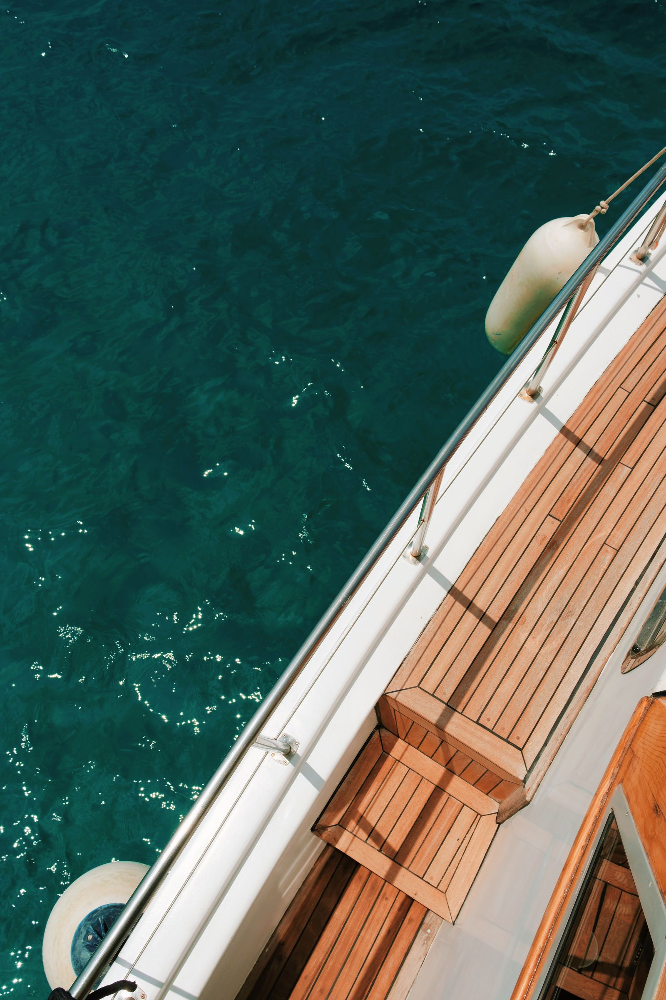
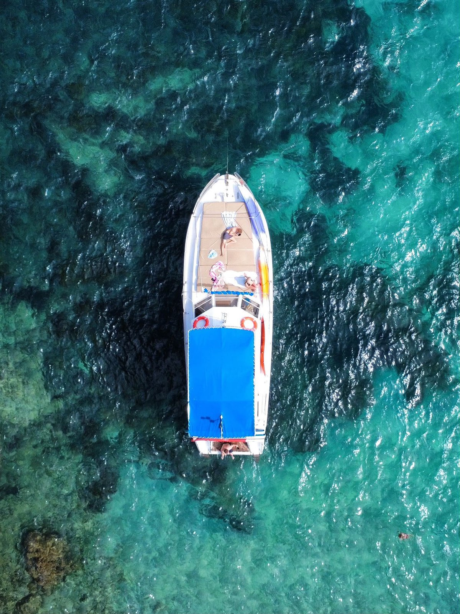
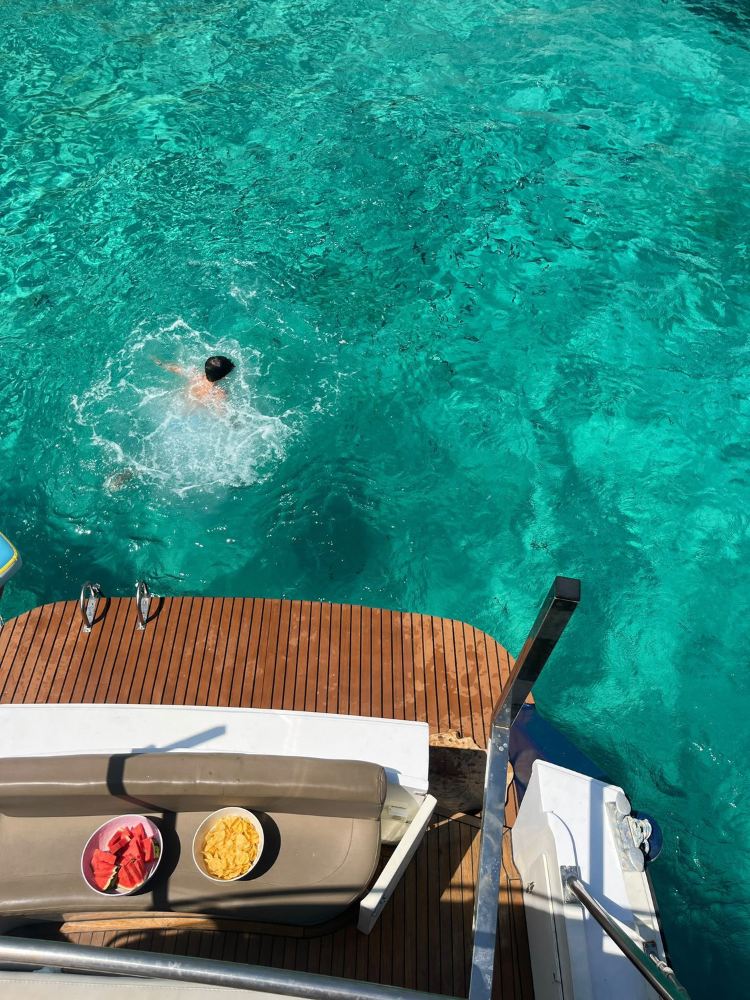
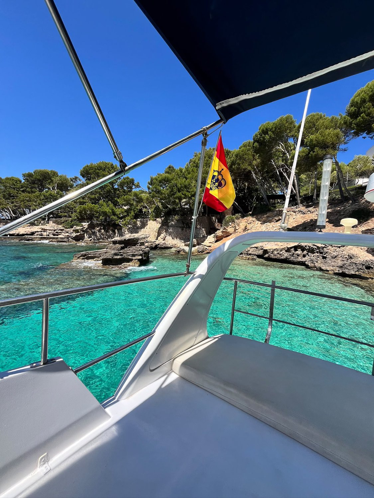
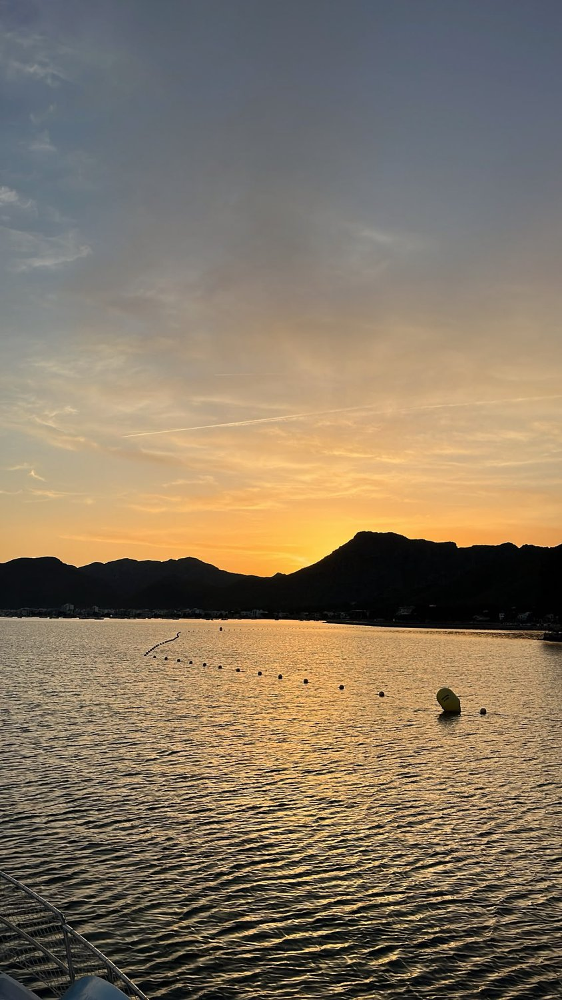

Zafiro es un Princess 37 Classic de 12,7 metros de eslora: un yate clásico, elegante y sorprendentemente amplio. Su diseño de doble cubierta reparte a los pasajeros en dos niveles, con varias zonas independientes para tomar el sol, refugiarse a la sombra o disfrutar del mar. Está pensado para que cada persona encuentre su rincón y viva un día a bordo cómodo, relajado y de alta calidad.

La proa es la zona estrella para relajarse y tomar el sol. Un solárium de gran tamaño en el que caben cómodamente más de seis personas tumbadas, con espacio adicional en la parte más adelantada para sentarse y contemplar las vistas. Una zona abierta y despejada, perfecta para disfrutar de la navegación y del paisaje.

Diseñada para disfrutar tanto en navegación como fondeados. Amplios asientos muy cómodos, una zona protegida con sombra y una gran plataforma de baño prácticamente a ras del agua, con escalera integrada que hace que entrar y salir del mar sea de lo más fácil y seguro.

Unas escaleras conducen desde la popa al flybridge, la segunda cubierta. Aquí está el puesto de gobierno del capitán y, tras él, un segundo solárium donde pueden tumbarse tres o cuatro personas. Es el mejor asiento del barco: vistas privilegiadas de toda la costa, una sensación de navegación espectacular y también una zona a la sombra para quienes prefieran resguardarse del sol.

El interior es amplio y confortable, con sofás en forma de L y una mesa central para comer, picar algo o tomar una copa en un ambiente elegante. Bajando las escaleras, a mano izquierda, encontrarás una zona privada para cambiarse de ropa que incluye un baño náutico completamente funcional.
El Zafiro está completamente equipado para el fondeo: no necesitas traer prácticamente nada, solo ganas de disfrutar. Confort, diversión y seguridad para todas las edades.
Plazas limitadas por salida. Escríbenos y te confirmamos disponibilidad en pocas horas.
Reservar